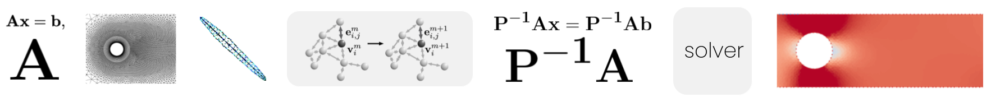
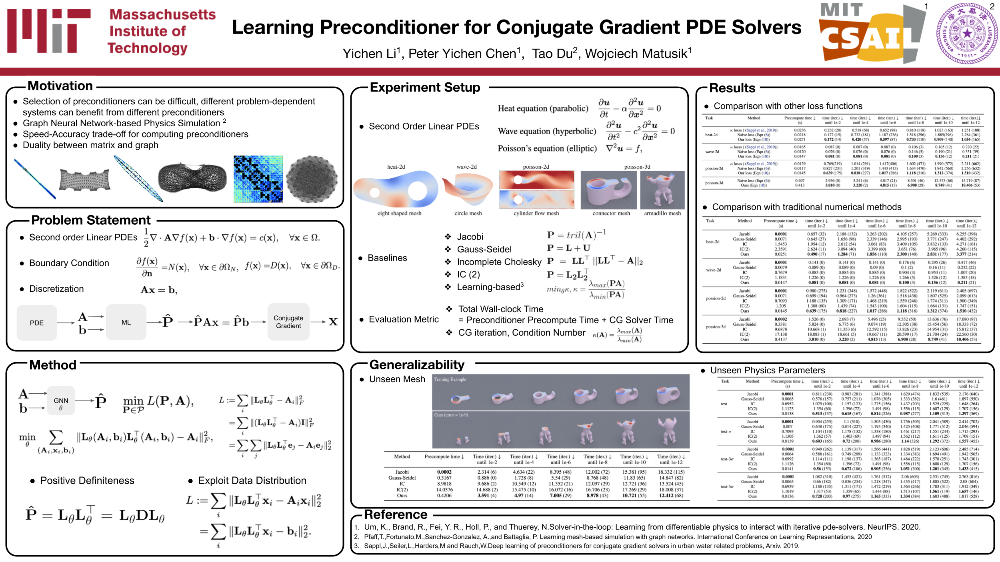

Yichen Li1 Peter Yichen Chen1 Tao Du2, 3 Wojciech Matusik1
1 MIT CSAIL
2 Tsinghua University
3 Shanghai Qizhi Institute
ICML 2023

Efficient numerical solvers for partial differential equations empower science and engineering. One of the commonly employed numerical solvers is the preconditioned conjugate gradient (PCG) algorithm that can solve large systems to a given precision level. One challenge in PCG solvers is the selection of preconditioners, as different problem-dependent systems can benefit from different preconditioners. We present a new method to introduce \emph{inductive bias} in preconditioning conjugate gradient algorithm. Given a system matrix and a set of solution vectors arise from an underlying distribution, we train a graph neural network to obtain an approximate decomposition to the system matrix to be used as a preconditioner in the context of PCG solvers. We conduct extensive experiments to demonstrate the efficacy and generalizability of our proposed approach on solving various 2D and 3D linear second-order PDEs.

@inproceedings{li2023preconditioner,
title={Learning preconditioners for conjugate gradient PDE solvers},
author={Li, Yichen and Chen, Peter Yichen and Du, Tao and Matusik, Wojciech},
booktitle={International Conference on Machine Learning},
pages={19425--19439},
year={2023},
organization={PMLR}
}